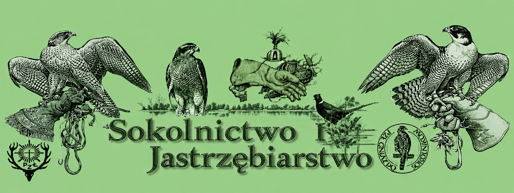

Polski Klub Sokolników PZŁ „Gniazdo Sokolników”
Ogólnopolski klub sokolników działający w strukturach Polskiego Związku Łowieckiego. Informacje o tradycji sokolniczej, działalności klubu, szkoleniach i tym, jak rozpocząć przygodę z sokolnictwem.

Wybrane polskie i zagraniczne strony poświęcone sokolnictwu, ptakom drapieżnym oraz ochronie ich populacji.
Ogólnopolski klub sokolników działający w strukturach Polskiego Związku Łowieckiego. Informacje o tradycji sokolniczej, działalności klubu, szkoleniach i tym, jak rozpocząć przygodę z sokolnictwem.
Serwis poświęcony ochronie ptaków drapieżnych, w szczególności restytucji sokoła wędrownego w Polsce, jego reintrodukcji i obserwacjom w naturze.
Materiały wprowadzające w temat sokolnictwa, polskie organizacje sokolnicze oraz praktyczne informacje dla osób, które chcą lepiej poznać tę dziedzinę.
Międzynarodowa federacja organizacji sokolniczych. Promuje tradycję sokolnictwa, współpracę między sokolnikami oraz ochronę ptaków drapieżnych i ich siedlisk.
Organizacja zajmująca się zachowaniem i popularyzacją dziedzictwa sokolniczego, jego historii, tradycji i znaczenia kulturowego.